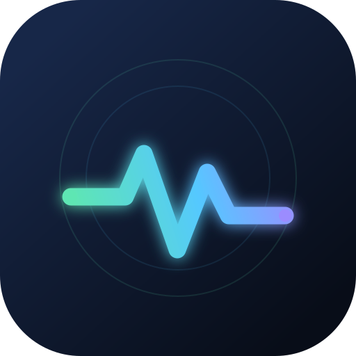

TechPulse AI SIGNAL OVERVIEWLIVE AI KEYWORDS
AI 圈热点词云
正在读取最新快照...
词云依据近 24 小时公开信息流的标题、信号词、来源等级和时效计算；它反映信息热度，不等同于搜索引擎的真实搜索量。
EXPLORE BY DESK
选择你要看的内容
01
LIVE INTELLIGENCE
今日情报
看全部聚合事件、原始来源、分类筛选和一手信号。
进入今日情报 ↗ 02 CREATOR DESK抖音科普选题
每天 5 条可拍的 AI 科普选题，附带讲解角度和原文来源。
进入选题池 ↗ 03 GITHUB TRENDINGGitHub 周 / 月热榜
官方 Trending 周期榜单，各取 TOP10，直达仓库原文。
进入 GitHub 热榜 ↗ 05 PAPER FRONTIERAI 权威论文
40 篇不限年代的里程碑论文，加上 10 篇近 21 天讨论度最高的最新论文。
进入论文库 ↗ 04 AI VOICES权威观点与会议
官方实验室、研究机构、会议官方与深度访谈，观点明确标注。
进入观点库 ↗LATEST SIGNALS
最近要闻
正在读取最新信息...